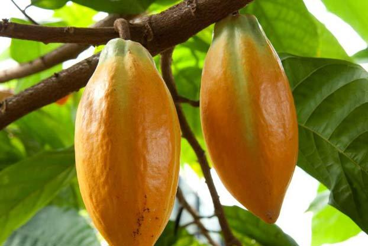
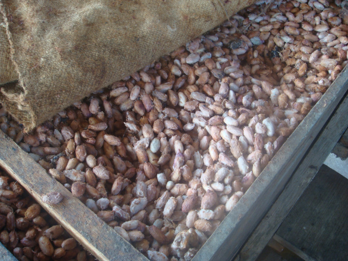
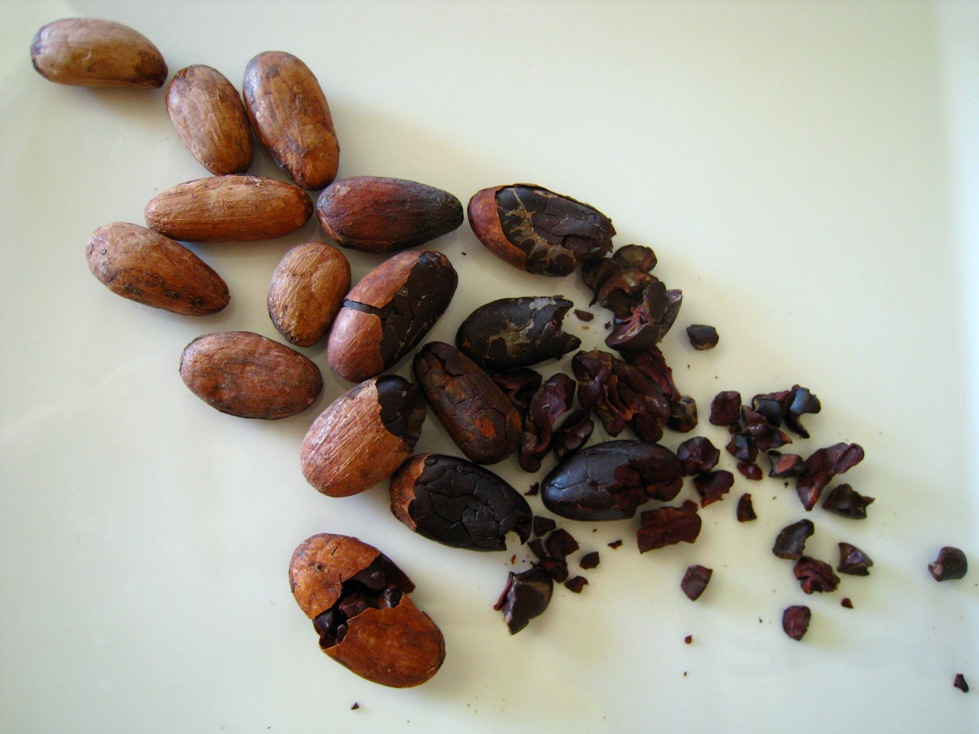
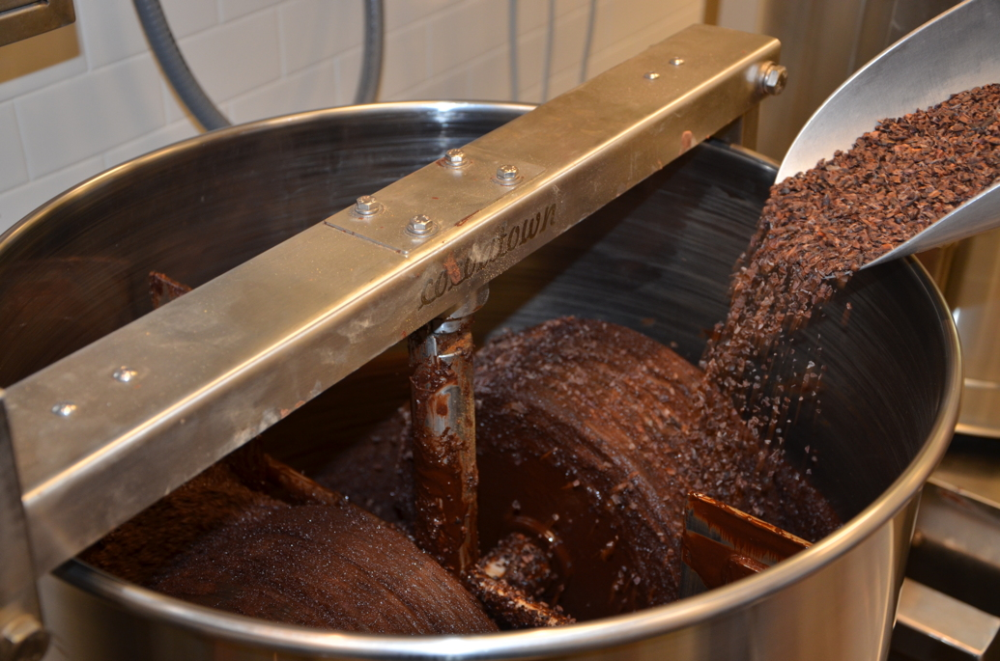
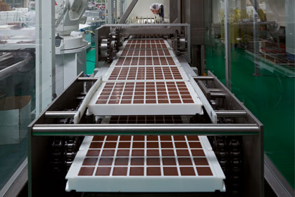

Do you ever wonder about the process it takes for a cocao bean growing on a cocao tree becomes the chocolate bar in your hand?
Cocoa beans are harvested twice a year when they have ripened. The cocoa pods are cut open and the white pulp is removed from the pod.

Go to top
Both the pods and pulp are placed into large wooden containers where the pod is fermented for five to seven days. Fermentation is when a substance chemically breaks down into a simpler substance with the help of microorganisms.

Go to top
To make sure that the beans will not mould during transportation, they must be dried. Usually they are dried by being spread out under the sun.
Go to top
Cocoa beans grow in hot climates like South and Central America but are most often made in cool climates like Europe and North America. After cocoa beans are dried, they are usually shipped off to chocolate makers or chocolate making companies.
Go to top
The specific ways of roasting are different to each chocolate maker. Some have roasting systems that are able to rotate the beans and roast all beans as evenly as possible.
Go to top
After the beans are roasted they have a thin shell around them that must be removed. The beans are cracked open and the shell is removed. The process is called winnowing and leaves behind what is known as cocoa nibs.

Go to top
The cocoa nibs are ground until they become a paste. This paste is called cocoa liquor (not as in that it contains alcohol) that contains the chocolate part called cocoa solids as well as the natural fat from the bean called cocoa butter. Cocoa butter is removed from the cocoa mass with a hydraulic press.
The cocoa mass is transferred into a conch where it stays for anywhere from a few hours to a few days (depending on the chocolate maker) where the chemical structure and particle size of chocolate are affected. Other flavours are added to the chocolate at this step.

Go to top
Tempering is raising and lowering the temperature of the chocolate to form the right kind of crystals.
Go to top
Melted chocolate is poured into a mould that shapes the chocolate into bars (or other shapes) then the chocolate is cooled.

Go to top
The last step is wrapping the chocolate bars, after they are wrapped they are ready to be transported and sold in stores.
Go to top
Check out this quick video showing the process of making chocolate!